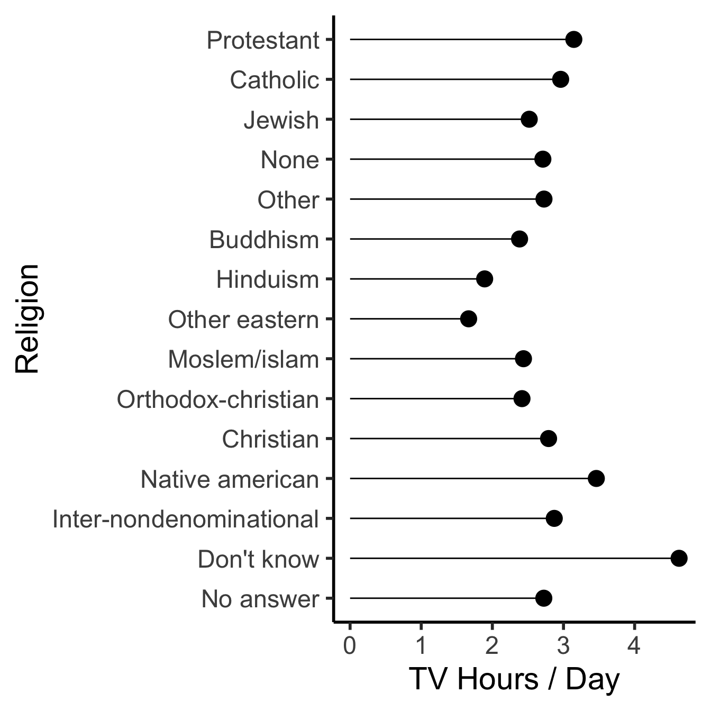
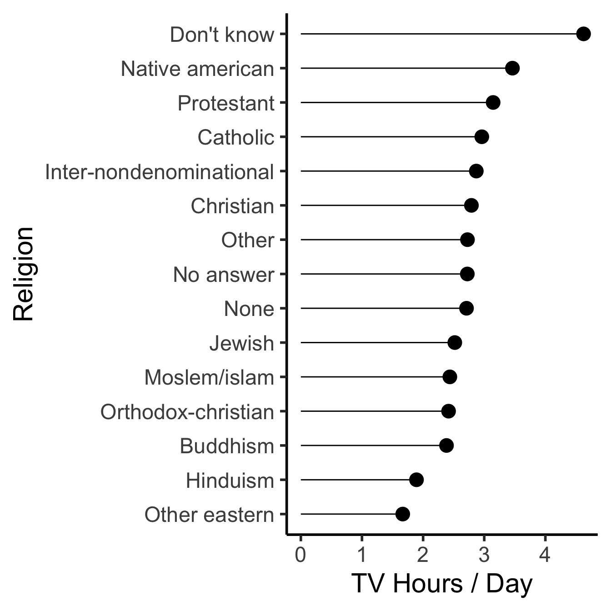
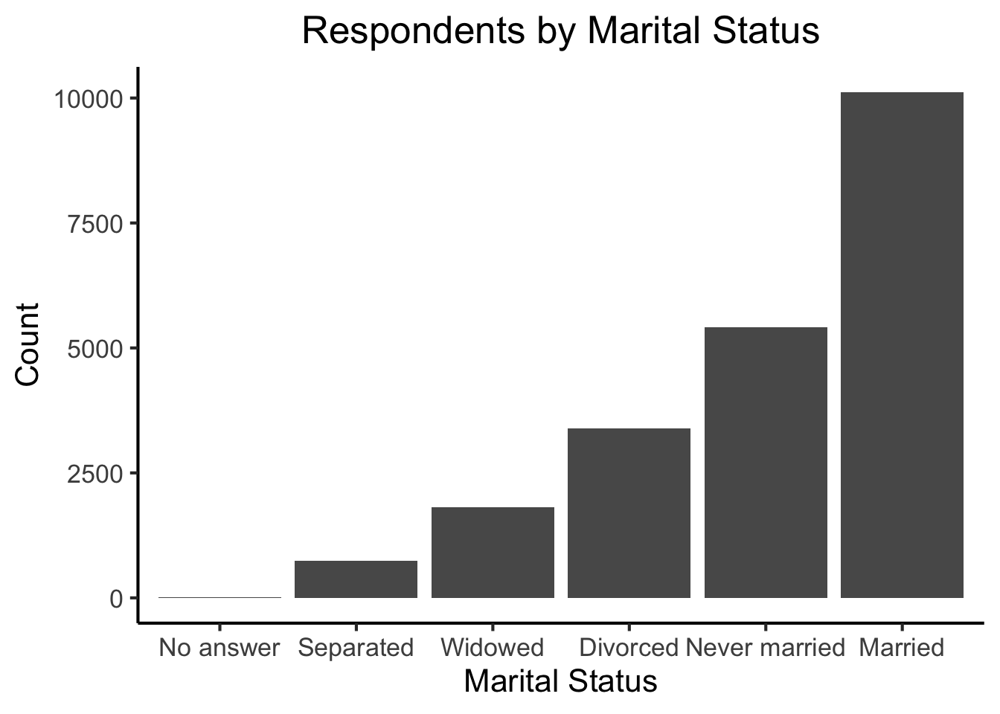

Code
source("../_globals.r")Week 7, Part 2
| Var A | Var B | |
|---|---|---|
| Obs 1 | Val 1A | Val 1B |
| Obs 2 | Val 2A | Val 2B |
| id | name | flights |
|---|---|---|
| DCA | Reagan National | 11.55 |
| BWI | Baltimore-Wash Int'l | 11.15 |
| IAD | Dulles International | 10.27 |
| id | var | value |
|---|---|---|
| DCA | name | Reagan National |
| DCA | flights | 11.55 |
| BWI | name | Baltimore-Wash Int'l |
| BWI | flights | 11.15 |
| IAD | name | Dulles International |
| IAD | flights | 10.27 |
Above: 11.55 is the value of an attribute of DCA (number of flights in 2022, in millions); Right: name is not a property of DCA
library(tidyverse)table1── Attaching core tidyverse packages ──────────────────────── tidyverse 2.0.0 ──
✔ dplyr 1.1.2 ✔ readr 2.1.4
✔ forcats 1.0.0 ✔ stringr 1.5.1
✔ ggplot2 3.4.3 ✔ tibble 3.2.1
✔ lubridate 1.9.2 ✔ tidyr 1.3.0
✔ purrr 1.0.2
── Conflicts ────────────────────────────────────────── tidyverse_conflicts() ──
✖ dplyr::filter() masks stats::filter()
✖ dplyr::lag() masks stats::lag()
ℹ Use the conflicted package (<http://conflicted.r-lib.org/>) to force all conflicts to become errors| country | year | cases | population |
|---|---|---|---|
| Afghanistan | 1999 | 745 | 19987071 |
| Afghanistan | 2000 | 2666 | 20595360 |
| Brazil | 1999 | 37737 | 172006362 |
| Brazil | 2000 | 80488 | 174504898 |
| China | 1999 | 212258 | 1272915272 |
| China | 2000 | 213766 | 1280428583 |
table2 |> head(6)| country | year | type | count |
|---|---|---|---|
| Afghanistan | 1999 | cases | 745 |
| Afghanistan | 1999 | population | 19987071 |
| Afghanistan | 2000 | cases | 2666 |
| Afghanistan | 2000 | population | 20595360 |
| Brazil | 1999 | cases | 37737 |
| Brazil | 1999 | population | 172006362 |
:::
source("../_globals.r")raw_data |> select() |> mutate() |> visualize()
raw_data |> filter() |> summarize() |> check_result() dplyr |
 ggplot2 |
3 | 4 |
| 5 | 6 | 7 | 8 |
tibbleHomepage | Overview | Cheatsheet
library(tibble)
data <- c(3.4,1.1,9.6)
labels <- c(0,1,0)
supervised_df <- tibble(x=data, y=labels)
supervised_df
library(tibble)
dsan_df <- tibble::tribble(
~code, ~topic, ~credits,
"dsan5000", "Data Science", 3,
"dsan5100", "Probabilistic Modeling", 3
)
dsan_dfR’s built-in data.frame objects, but retains syntax for backwards compatibility:| x | y |
|---|---|
| 3.4 | 0 |
| 1.1 | 1 |
| 9.6 | 0 |
tribble() (tibble defined row-by-row)| code | topic | credits |
|---|---|---|
| dsan5000 | Data Science | 3 |
| dsan5100 | Probabilistic Modeling | 3 |
dplyrHomepage | Overview | Cheatsheet
Grammar of data manipulation (think verbs):
filter()select()arrange()mutate()summarize()filter():
table1 |> filter(year == 2000)| country | year | cases | population |
|---|---|---|---|
| Afghanistan | 2000 | 2666 | 20595360 |
| Brazil | 2000 | 80488 | 174504898 |
| China | 2000 | 213766 | 1280428583 |
select():
table1 |> select(country)| country |
|---|
| Afghanistan |
| Afghanistan |
| Brazil |
| Brazil |
| China |
| China |
arrange():
table1 |> arrange(population)| country | year | cases | population |
|---|---|---|---|
| Afghanistan | 1999 | 745 | 19987071 |
| Afghanistan | 2000 | 2666 | 20595360 |
| Brazil | 1999 | 37737 | 172006362 |
| Brazil | 2000 | 80488 | 174504898 |
| China | 1999 | 212258 | 1272915272 |
| China | 2000 | 213766 | 1280428583 |
mutate():
table1 |> mutate(newvar = 300)| country | year | cases | population | newvar |
|---|---|---|---|---|
| Afghanistan | 1999 | 745 | 19987071 | 300 |
| Afghanistan | 2000 | 2666 | 20595360 | 300 |
| Brazil | 1999 | 37737 | 172006362 | 300 |
| Brazil | 2000 | 80488 | 174504898 | 300 |
| China | 1999 | 212258 | 1272915272 | 300 |
| China | 2000 | 213766 | 1280428583 | 300 |
summarize():
table1 |>
summarize(
avg_cases = mean(cases),
avg_pop = mean(population)
)| avg_cases | avg_pop |
|---|---|
| 91276.67 | 490072924 |
summarize() with grouping:
table1 |>
group_by(country) |>
summarize(
avg_cases = mean(cases),
avg_pop = mean(population)
)| country | avg_cases | avg_pop |
|---|---|---|
| Afghanistan | 1705.5 | 20291216 |
| Brazil | 59112.5 | 173255630 |
| China | 213012.0 | 1276671928 |
forcatsreadrstringrtidyrpurrrlubridate*forcatsHomepage | Overview | Cheatsheet
R’s data structure for categorical variables)month_levels <- c(
"Jan", "Feb", "Mar", "Apr",
"May", "Jun", "Jul", "Aug",
"Sep", "Oct", "Nov", "Dec"
)
d <- c("Jan","Jan","Feb","Dec")
print(d)
dataf <- parse_factor(
d,
levels=month_levels
)
print(dataf)[1] "Jan" "Jan" "Feb" "Dec"[1] Jan Jan Feb Dec
Levels: Jan Feb Mar Apr May Jun Jul Aug Sep Oct Nov Decrelig_summary <- gss_cat %>%
group_by(relig) %>%
summarise(
age = mean(age, na.rm = TRUE),
tvhours = mean(tvhours, na.rm = TRUE),
n = n()
)
relig_labs <- labs(
x = "TV Hours / Day",
y = "Religion"
)Without forcats:
relig_summary |>
ggplot(aes(tvhours, relig)) +
geom_point(size=g_pointsize) +
geom_segment(aes(yend = relig, x=0, xend = tvhours)) +
dsan_theme("half") +
relig_labs
With forcats:
relig_summary |>
mutate(relig = fct_reorder(relig, tvhours)) |>
ggplot(aes(x=tvhours, y=relig)) +
geom_point(size=g_pointsize) +
geom_segment(aes(yend = relig, x=0, xend = tvhours)) +
dsan_theme("half") +
relig_labs
fct_infreq()barplot_labs <- labs(
title = "Respondents by Marital Status",
x = "Marital Status",
y = "Count"
)gss_cat |>
mutate(marital = marital |> fct_infreq() |> fct_rev()) |>
ggplot(aes(marital)) + geom_bar() + barplot_labs +
dsan_theme("full")
Automatically combining using fct_lump():
gss_cat |>
mutate(relig = fct_lump(relig)) |>
count(relig)| relig | n |
|---|---|
| Protestant | 10846 |
| Other | 10637 |
Manually Combining using fct_recode():
gss_cat |>
mutate(partyid = fct_recode(partyid,
"Republican" = "Strong republican",
"Republican" = "Not str republican",
"Independent" = "Ind,near rep",
"Independent" = "Ind,near dem",
"Democrat" = "Not str democrat",
"Democrat" = "Strong democrat",
"Other" = "No answer",
"Other" = "Don't know",
"Other" = "Other party"
)) |>
count(partyid)| partyid | n |
|---|---|
| Other | 548 |
| Republican | 5346 |
| Independent | 8409 |
| Democrat | 7180 |
readrHomepage | Overview | Cheatsheet
Two key functions: read_csv(), write_csv()1
read_csv() vs. read.csv()
Note that these are not the same as R’s built-in read.csv() and write.csv()! The built-in R functions will produce a plain data.frame object, not a tibble
gdp_df <- read_csv("https://gist.githubusercontent.com/jpowerj/fecd437b96d0954893de727383f2eaf2/raw/fec58507f7095cb8341b229d6eb74ce53232d663/gdp_2010.csv")
gdp_df |> head(6)read_csv() path issues either…)Rows: 204 Columns: 4
── Column specification ────────────────────────────────────────────────────────
Delimiter: ","
chr (2): name, code
dbl (2): year, value
ℹ Use `spec()` to retrieve the full column specification for this data.
ℹ Specify the column types or set `show_col_types = FALSE` to quiet this message.| name | code | year | value |
|---|---|---|---|
| Afghanistan | AFG | 2010 | 15936800636 |
| Albania | ALB | 2010 | 11926953259 |
| Algeria | DZA | 2010 | 161207268655 |
| American Samoa | ASM | 2010 | 576000000 |
| Andorra | AND | 2010 | 3355695364 |
| Angola | AGO | 2010 | 82470913121 |
purrr: Functional ProgrammingHomepage | Overview | Cheatsheet | Tutorials, with Applications
Provides an anonymous function operator ~, arguments get named .x, .y:
my_points <- c("Midterm"=18, "Final"=300)
total_points <- c("Midterm"=20, "Final"=400)
(avg_score <- map2(my_points, total_points,
~ list(frac=.x / .y, pct=(.x/.y)*100)))$Midterm
$Midterm$frac
[1] 0.9
$Midterm$pct
[1] 90
$Final
$Final$frac
[1] 0.75
$Final$pct
[1] 75Along with helpful functions for transforming the output
list_flatten(avg_score)$Midterm_frac
[1] 0.9
$Midterm_pct
[1] 90
$Final_frac
[1] 0.75
$Final_pct
[1] 75every(avg_score, ~ .x$frac > 0.5)[1] TRUElubridate*Homepage | Overview | Cheatsheet
lubridate
Note that lubridate does not get loaded with the other packages in the tidyverse when you call library(tidyverse). It needs to be imported explicitly:
library(tidyverse)
library(lubridate)Text Preprocessing For Unsupervised Learning: Why It Matters, When It Misleads, And What To Do About It [@denny_text_2018] (PDF Link)


| doc_id | text |
texts |
Kékkek |
voice |
|
|---|---|---|---|---|---|
| 0 | 0 | 6 | 0 | 1 | |
| 1 | 0 | 0 | 3 | 1 | |
| 2 | 6 | 0 | 0 | 0 |
| doc_id | text |
kekkek |
voice |
||
|---|---|---|---|---|---|
| 0 | 6 | 0 | 1 | ||
| 1 | 0 | 3 | 1 | ||
| 2 | 6 | 0 | 0 |
select() lets you keep only the columns you care about in your current analysis:
library(tidyverse)
table1
table1 |> select(country, year, population)| country | year | cases | population |
|---|---|---|---|
| Afghanistan | 1999 | 745 | 19987071 |
| Afghanistan | 2000 | 2666 | 20595360 |
| Brazil | 1999 | 37737 | 172006362 |
| Brazil | 2000 | 80488 | 174504898 |
| China | 1999 | 212258 | 1272915272 |
| China | 2000 | 213766 | 1280428583 |
| country | year | population |
|---|---|---|
| Afghanistan | 1999 | 19987071 |
| Afghanistan | 2000 | 20595360 |
| Brazil | 1999 | 172006362 |
| Brazil | 2000 | 174504898 |
| China | 1999 | 1272915272 |
| China | 2000 | 1280428583 |
filter() lets you keep only the rows you care about in your current analysis:
table1 |> filter(year == 2000)
table1 |> filter(country == "Afghanistan")| country | year | cases | population |
|---|---|---|---|
| Afghanistan | 2000 | 2666 | 20595360 |
| Brazil | 2000 | 80488 | 174504898 |
| China | 2000 | 213766 | 1280428583 |
| country | year | cases | population |
|---|---|---|---|
| Afghanistan | 1999 | 745 | 19987071 |
| Afghanistan | 2000 | 2666 | 20595360 |
df <- table1 |>
select(country, year, population) |>
filter(year == 2000)
df |> write_csv("assets/pop_2000.csv")
df| country | year | population |
|---|---|---|
| Afghanistan | 2000 | 20595360 |
| Brazil | 2000 | 174504898 |
| China | 2000 | 1280428583 |
gdp_df <- read_csv("https://gist.githubusercontent.com/jpowerj/c83e87f61c166dea8ba7e4453f08a404/raw/29b03e6320bc3ffc9f528c2ac497a21f2d801c00/gdp_2000_2010.csv")Rows: 403 Columns: 4
── Column specification ────────────────────────────────────────────────────────
Delimiter: ","
chr (2): Country Name, Country Code
dbl (2): Year, Value
ℹ Use `spec()` to retrieve the full column specification for this data.
ℹ Specify the column types or set `show_col_types = FALSE` to quiet this message.gdp_df |> head(5)| Country Name | Country Code | Year | Value |
|---|---|---|---|
| Afghanistan | AFG | 2010 | 15936800636 |
| Albania | ALB | 2000 | 3632043908 |
| Albania | ALB | 2010 | 11926953259 |
| Algeria | DZA | 2000 | 54790245601 |
| Algeria | DZA | 2010 | 161207268655 |
gdp_2000_df <- gdp_df |>
select(`Country Name`,Year,Value) |>
filter(Year == "2000") |>
rename(country=`Country Name`, year=`Year`, gdp=`Value`)
gdp_2000_df |> write_csv("assets/gdp_2000.csv")
gdp_2000_df |> head()| country | year | gdp |
|---|---|---|
| Albania | 2000 | 3632043908 |
| Algeria | 2000 | 54790245601 |
| Andorra | 2000 | 1434429703 |
| Angola | 2000 | 9129594819 |
| Antigua and Barbuda | 2000 | 830158769 |
| Argentina | 2000 | 284203750000 |
Pandas provides an easy-to-use df.merge(other_df)!
merged_df = pop_df.merge(gdp_df,
on='country', how='left', indicator=True
)
Markdown(merged_df.to_markdown())| country | year_x | population | year_y | gdp | _merge | |
|---|---|---|---|---|---|---|
| 0 | Afghanistan | 2000 | 20595360 | nan | nan | left_only |
| 1 | Brazil | 2000 | 174504898 | 2000 | 6.55421e+11 | both |
| 2 | China | 2000 | 1280428583 | 2000 | 1.21135e+12 | both |
merged_df = pop_df.merge(gdp_df,
on='country', how='inner', indicator=True
)
Markdown(merged_df.to_markdown())| country | year_x | population | year_y | gdp | _merge | |
|---|---|---|---|---|---|---|
| 0 | Brazil | 2000 | 174504898 | 2000 | 6.55421e+11 | both |
| 1 | China | 2000 | 1280428583 | 2000 | 1.21135e+12 | both |
Sometimes you can’t merge because one of the datasets looks like the table on the left, but we want it to look like the table on the right
In data-cleaning jargon, this dataset is long (more than one row per observation)
table2 |> write_csv("assets/long_data.csv")
table2 |> head()| country | year | type | count |
|---|---|---|---|
| Afghanistan | 1999 | cases | 745 |
| Afghanistan | 1999 | population | 19987071 |
| Afghanistan | 2000 | cases | 2666 |
| Afghanistan | 2000 | population | 20595360 |
| Brazil | 1999 | cases | 37737 |
| Brazil | 1999 | population | 172006362 |
In data-cleaning jargon, this dataset is wide (one row per obs; usually tidy)
table1 |> write_csv("assets/wide_data.csv")
table1 |> head()| country | year | cases | population |
|---|---|---|---|
| Afghanistan | 1999 | 745 | 19987071 |
| Afghanistan | 2000 | 2666 | 20595360 |
| Brazil | 1999 | 37737 | 172006362 |
| Brazil | 2000 | 80488 | 174504898 |
| China | 1999 | 212258 | 1272915272 |
| China | 2000 | 213766 | 1280428583 |
gather()table1| country | year | cases | population |
|---|---|---|---|
| Afghanistan | 1999 | 745 | 19987071 |
| Afghanistan | 2000 | 2666 | 20595360 |
| Brazil | 1999 | 37737 | 172006362 |
| Brazil | 2000 | 80488 | 174504898 |
| China | 1999 | 212258 | 1272915272 |
| China | 2000 | 213766 | 1280428583 |
long_df <- gather(table1,
key = "variable",
value = cases,
-c(country, year)
)
long_df |> head()| country | year | variable | cases |
|---|---|---|---|
| Afghanistan | 1999 | cases | 745 |
| Afghanistan | 2000 | cases | 2666 |
| Brazil | 1999 | cases | 37737 |
| Brazil | 2000 | cases | 80488 |
| China | 1999 | cases | 212258 |
| China | 2000 | cases | 213766 |
Plus a bonus read_delim() if read_csv() fails↩︎